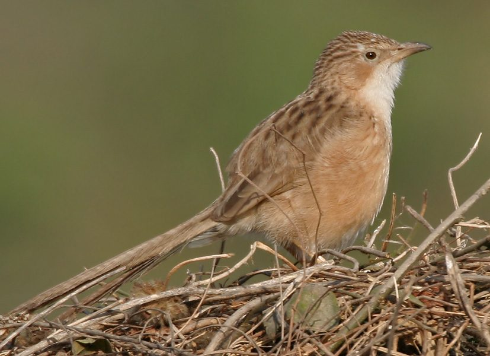

चिलचिलCommon Babbler
Turdoides caudata · Leiothrichidae · BRD-0349

- Scientific name वैज्ञानिक नाम
- Turdoides caudata (Dumont, 1823)
- Family कुल
- Leiothrichidae
- Hindi हिंदी
- चिलचिल
- Local names स्थानीय नाम
- chilchil, dumri, peng, common babbler
- Status here यहाँ की स्थिति
- native
- Movement आवागमन
- Resident, here all year
- Known from कहाँ दर्ज
- Others have published records from the Basti–Ayodhya districts बस्ती–अयोध्या के ज़िलों से दूसरों के प्रकाशित अभिलेख
- IUCN IUCN
- LC
- Review समीक्षा
- not yet reviewed
When to look कब देखें
Present all year. साल भर मौजूद।
Tell it apart from इनसे अलग पहचानें
चिलचिल / Common Babbler
Turdoides caudata (Dumont, 1823) — Leiothrichidae
चिलचिल — बेकर (1922) के अनुसार उत्तर भारत के सबसे आम और परिचित पक्षियों में से एक, जो गांवों के आसपास और आंगनों में भी घोंसला बनाता है; यह जंगलों में नहीं रहता, बल्कि झाड़ियों और बाड़ों वाले खुले इलाकों और सूखे घास के मैदानों में मिलता है। ऊपर का रंग बादामी-भूरा होता है, हर पंख पर गहरी भूरी धारी होती है, और पूंछ लंबी होती है। बेकर ने 'चिल-चिल' नाम उत्तर-पश्चिमी प्रांतों (N.W.P.) से दर्ज किया है।
Quick Identification त्वरित पहचान
| Feature | Description | |
|---|---|---|
| Habit | Highly gregarious, social, ground-hopping babbler of dry thorny scrub and hedges | |
| Size | Slender babbler with a long graduated tail, noticeably slimmer than a [[jungle_babbler | Jungle Babbler]] |
| Plumage | Pale greyish-brown above, boldly streaked with dark brown shaft-stripes; pale fulvous below | |
| Tail | Long, graduated, loosely attached dark brown tail, carried trailing or slightly cocked | |
| Bill & Eyes | Light brown bill, yellow at base below; iris brown, yellow or red-brown (Baker 1922, p. 198) | |
| Call | Jerdon's low undertoned warbling whistle and soft chattering (Baker 1922, p. 199) |
Field tip: Look in thorny babool scrub and village cactus hedges for parties hopping on the ground with long loose tails.
हिंदी:
इसका शरीर रेतीला-भूरा और धारियों वाला होता है, पूंछ लंबी होती है और यह हमेशा छोटे झुंड में कतार बनाकर चलता है।
Morphology आकारिकी
Measurements as given by Baker (1922):
| Measurement | Range |
|---|---|
| Biometrics | Total length about 230 mm. ; wing 78 to 84 mm. ; tail about 120 to 125 mm. ; tarsus about 28 mm. ; culmen about 19 to 20 mm. (Baker 1922 as Argya caudata caudata) |
The Common Babbler is a slender, long-tailed babbler. The upper plumage is pale sandy-brown or greyish-brown, with each feather marked down the centre by a distinct dark brown shaft-stripe. Stuart Baker (1922, p. 198) described the lower plumage: "lower plumage pale fulvous, albescent on the abdomen."
Soft parts (Baker 1922, p. 198): "Bill light brown, yellow at base below; legs and feet yellow; iris brown or yellow (Bingham); red-brown (Jerdon)."
Vocalisations. Stuart Baker (1922, p. 199) quoted Jerdon: "low, undertoned warbling whistle" and "a constant soft chattering", noting the bird is "less noisy" than its congener.
हिंदी:
बेकर (1922) के अनुसार इसकी कुल लंबाई लगभग 230 मिमी, पंख 78 से 84 मिमी, पूंछ लगभग 120 से 125 मिमी, टार्सस लगभग 28 मिमी और कल्मेन लगभग 19 से 20 मिमी होता है। जर्डन के अनुसार इसकी आवाज धीमी, सुरीली सीटी जैसी और लगातार धीमी चहचहाहट वाली होती है।
Behaviour & Ecology व्यवहार और पारिस्थितिकी
Stuart Baker (1922, p. 199) described the habits: "In the North of India this is one of the most common and familiar of birds, entering and breeding in compounds and all round about villages ... wherever there is open country with sufficient cover ... It does not haunt forests, but is often found in high grass-covered plains when they are dry."
हिंदी:
बेकर (1922) के अनुसार यह उत्तरी भारत में अत्यंत सामान्य और जाना-पहचाना पक्षी है, जो गांवों और घरों के आहातों में रहता है जहां पर्याप्त झाड़ियां हों; यह जंगलों में नहीं रहता।
Life Cycle / Phenology जीवन चक्र
Stuart Baker (1922, p. 199) recorded: "The principal months are March to May before the rains break and again in July to September" though it "breeds practically throughout the year, certainly having two broods and sometimes possibly three."
The nest is "a fairly neat cup made of grass, with roots, grass, bark and other fibrous material ... There is either no lining or a very slight one of fine grass stems" placed "generally in a thorny bush, but also in cactus hedges, orange-trees, babools, tufts of grass, tangles of canes or vines, creepers over trellis-work" (Baker 1922, p. 199). The eggs are three or four in number, in South India sometimes only two, dark glossy-blue (Baker 1922, p. 199). The babool mentioned is Babool (Vachellia nilotica).
हिंदी:
बेकर (1922) के अनुसार मुख्य प्रजनन काल मार्च से मई और फिर जुलाई से सितंबर है। यह कंटीली झाड़ियों और बबूल में घास का घोंसला बनाता है जिसमें तीन या चार गहरे चमकदार नीले अंडे दिए जाते हैं।
Host Plants or Prey आहार
No source opened for this atlas lists the food of this bird.
हिंदी:
इस एटलस के लिए खोले गए किसी भी स्रोत में इसके विशिष्ट आहार की सूची नहीं है।
Predators / Natural Enemies शत्रु
No source opened for this atlas names a specific predator of this bird.
हिंदी:
इस एटलस के लिए खोले गए किसी भी स्रोत में इस पक्षी के किसी विशिष्ट शिकारी का नाम नहीं है।
Agricultural / Human Relevance कृषि प्रासंगिकता
No source opened for this atlas describes this bird's dealings with people. Protected under the Wildlife (Protection) Act, 1972.
हिंदी:
इस एटलस के लिए खोले गए किसी भी स्रोत में लोगों के साथ इस पक्षी के व्यवहार या संबंधों का विवरण नहीं है। यह वन्यजीव (संरक्षण) अधिनियम, 1972 के तहत संरक्षित है।
Expected Locally स्थानीय रूप से अपेक्षित
Not a field record. Written from published accounts for eastern Uttar Pradesh. No confirmed local sighting yet — if you have seen it, that is what the atlas needs.
अभी तक स्थानीय पुष्टि नहीं। यह विवरण प्रकाशित स्रोतों से है, किसी अवलोकन से नहीं।
GBIF holds published records from these districts. A historical 1915 specimen from Gonda documents its presence in the region, though it is not known to be regular in Basti–Ayodhya.
A first record would be a photograph of the bird with place and date, sent through the About page.
Distribution वितरण
Stuart Baker (1922, p. 198) defined the distribution: "Every portion of India proper, from Sind to E. Bengal and Calcutta; from the foot of the Himalayas to the Palni Hills; the Laccadives and in Rameswaram Island. Not Burma."
In Uttar Pradesh, GBIF holds published records from Lucknow, Bahraich, Gonda, Gorakhpur, and Amethi.
हिंदी:
बेकर (1922) के अनुसार इसका वितरण सिंध से लेकर पूर्वी बंगाल और कलकत्ता तक तथा हिमालय की तलहटी से लेकर पलनी पहाड़ियों तक पूरे भारत में है। उत्तर प्रदेश में जीबीआईएफ के रिकॉर्ड लखनऊ, बहराइच, गोंडा, गोरखपुर और अमेठी से हैं।
Research Questions शोध प्रश्न
- Are remnant coveys of Common Babblers surviving in degraded riverine scrub along the Ghaghara in Gonda and Basti? / क्या गोंडा और बस्ती में घाघरा नदी के किनारे कंटीली झाड़ियों में चिलचिल के झुंड अभी भी बचे हुए हैं?
- How does the removal of traditional thorny field hedges affect the territory density of social babbler groups? / खेतों की पारंपरिक कंटीली बाड़ों के हटने से इन सामाजिक पक्षियों की संख्या पर क्या असर पड़ा है?
- What is the average group size and helper ratio in agricultural versus semi-natural scrubland habitats?
- Do Common Babblers utilize invasive prosopis (Prosopis juliflora) thickets as surrogate nesting sites?
- Can local naturalists survey roadside babool patches to verify current occupancy in eastern Uttar Pradesh? (Volunteers can record party size and GPS locations in thorny hedges.)
Similar Species मिलती-जुलती प्रजातियाँ
| Species | How to tell apart | हिंदी | |
|---|---|---|---|
| [[jungle_babbler | Jungle Babbler]] (Argya striata) | Much heavier build, plain unstreaked ashy-grey plumage, pale creamy eyes, and heavy yellow bill | सात भाई |
| [[large_grey_babbler | Large Grey Babbler]] (Argya malcolmi) | Larger size, plain greyish mantle, and conspicuous whitish outer tail feathers | घोंघाई |
| [[striated_babbler | Striated Babbler]] (Argya earlei) | Darker rufous-brown plumage, heavily streaked upper breast, and tall wetland reedbed habitat | स्ट्रिएटेड बैबलर |
Field rule: The slender build, sandy-buff upperparts boldly streaked with dark shaft-stripes, long trailing graduated tail, in open scrub, hedges and village surroundings identify the Common Babbler.
हिंदी:
सात भाई (जंगल बैबलर) का शरीर भारी, धूसर और बिना धारियों का होता है; चिलचिल का शरीर रेतीला, धारियों वाला और पूंछ लंबी होती है।
Taxonomy & Classification वर्गीकरण
Original description. Described by Charles Dumont in 1823 in Dictionnaire des Sciences Naturelles (Vol. 29, p. 266), under the basionym Cossyphus caudatus (Baker 1922, p. 198).
Synonyms and historical names. Stuart Baker (1922, p. 198) placed the bird in the genus Argya, as Argya caudata caudata, noting the Hindi vernacular names "Chil-chil (Hind. in the N.W.P.)" and "Chota-penga (Hindi)". Modern classifications treat Argya or Turdoides as the genus; the IUCN Red List files the species under Argya caudata.
Subspecies. The northern Indian subcontinent population represents the nominate subspecies Turdoides caudata caudata (Dumont, 1823), while Baker (1922, p. 199) gives A. c. huttoni for "Afghanistan, Baluchistan and S.E. Persia".
Family and order placement. Order Passeriformes (perching birds); family Leiothrichidae (laughingthrushes and babblers); genus Turdoides.
IUCN status rationale. Evaluated as Least Concern (LC) by the IUCN Red List (BirdLife International 2016).
हिंदी:
चार्ल्स ड्यूमोंट ने 1823 में इसका वर्णन किया था। बेकर ने इसे Argya caudata caudata के तहत दर्ज किया और चिलचिल नाम दिया। यह लियोथ्रिचिडी कुल का सदस्य है और संकटमुक्त (LC) है।
Photo Gallery फोटो गैलरी
No photos yet — add field photos to media/species/common_babbler/ and run node scripts/sync_photos.js.
Photos needed आवश्यक फोटो
- [ ] Group hopping in thorny bush showing streaked back and long tail (कंटीली झाड़ी में बैठा झुंड)
- [ ] Close-up showing slender yellowish bill and dark shaft-streaks (सिर और चोंच का स्पष्ट दृश्य)
References संदर्भ
- Dumont, C. (1823). Dictionnaire des Sciences Naturelles. Vol. 29. F. G. Levrault, Strasbourg & Paris, p. 266 (as Cossyphus caudatus).
- Baker, E. C. S. (1922). The Fauna of British India, Including Ceylon and Burma. Birds. Vol. 1. Taylor & Francis, London, p. 198 (as Argya caudata caudata).
- Ali, S. & Ripley, S. D. (1987). Compact Handbook of the Birds of India and Pakistan. Oxford University Press, New Delhi.
- Grimmett, R., Inskipp, C. & Inskipp, T. (2011). Birds of the Indian Subcontinent. 2nd ed. Christopher Helm, London.
- BirdLife International (2016). Argya caudata. The IUCN Red List of Threatened Species 2016: e.T22716344A94491523. doi:10.2305/iucn.uk.2016-3.rlts.t22716344a94491523.en
- GBIF Occurrence Data — Turdoides caudata, India (2025).
Source file: species/fauna/birds/common_babbler.md